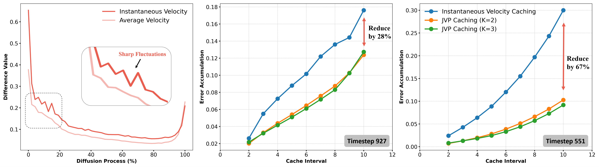
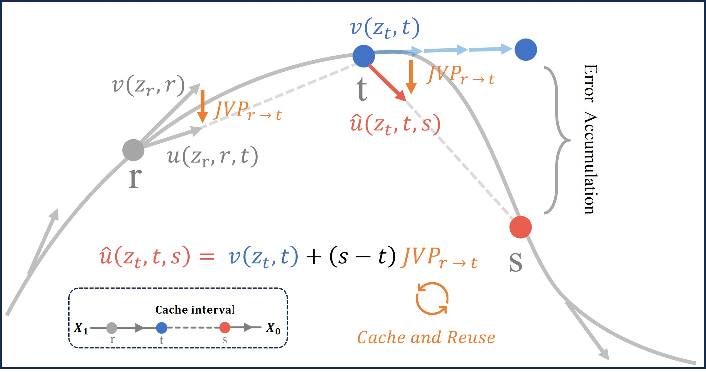
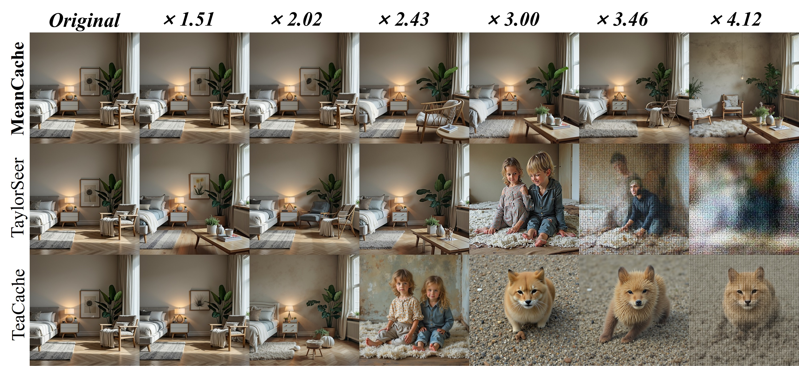

In Flow Matching inference, existing caching methods primarily rely on reusing Instantaneous Velocity or its feature-level proxies. However, we observe that instantaneous velocity often exhibits sharp fluctuations across timesteps. This leads to severe trajectory deviations and cumulative errors, especially as the cache interval increases.
Inspired by MeanFlow, we propose MeanCache. Compared to unstable instantaneous velocity, Average Velocity is significantly smoother and more robust over time. By shifting the caching perspective from a single "point" to an "interval," MeanCache effectively mitigates trajectory drift under high acceleration ratios.

Figure 1: Instantaneous vs. Average Velocity and JVP Caching. (Left) Along the original trajectory, instantaneous velocity shows sharp fluctuations, while average velocity is much smoother. (Middle) At timestep 927, JVP Caching reduces error accumulation, though its effectiveness depends on the cache interval and hyperparameter $K$. (Right) At timestep 551, it achieves stronger error mitigation, showing that effectiveness varies across timesteps. Both middle and right figures are under the single-cache setting on the original trajectory.
We leverage Jacobian-Vector Products (JVP) to construct estimated interval average velocities. By reusing JVP information calculated at prior timesteps, we transform the current instantaneous velocity $v$ into an estimated average velocity $\hat{u}$ for the target interval. This approach compensates for trajectory deviations without additional inference overhead:

Figure 2: From Instantaneous to Average Velocity. Directly caching the instantaneous velocity $v(z_t,t)$ over $[t,s]$ easily leads to trajectory drift and error accumulation, whereas the average velocity $u(z_t,t,s)$ accurately reaches the target $s$. MeanCache introduces a prior timestep $r$ and reuses $\mathrm{JVP}_{r \to t}$ to estimate the average velocity $\hat{u}(z_t,t,s)$, thereby correcting the trajectory and effectively mitigating error accumulation.
To achieve an optimal balance between speed and quality while accounting for temporal heterogeneity, we propose a trajectory-stability scheduling algorithm:
-
Stability Map via Graph Representation: We model the inference process as a Multigraph, where the edge weight $\mathcal{L}_K(t,s)$ represents the Stability Deviation—the error between predicted and true average velocities under a cache span $K$:
$$\mathcal{L}_K(t,s) = \frac{1}{N} \left\| u(z_t,t,s) - v(z_t,t) - (s-t)\widehat{\text{JVP}}_K \right\|_1$$
-
Peak-Suppressed Shortest Path: Given a computation budget $\mathcal{B}$, we solve for a "peak-suppressed" shortest path. By introducing a penalty coefficient $\gamma$ for high-error edges, this strategy ensures smooth and continuous trajectory generation:
$$\pi^\star = \arg\min_{\pi \in \mathcal{P}(T,0)} \sum_{e \in \pi} \mathcal{C}(e)^\gamma \quad \text{s.t.} \quad |\pi| \leq \mathcal{B}$$
Maintaining content consistency is a primary challenge for acceleration frameworks. Rare words, characterized by ambiguous semantics and low frequency, often lead to significant visual drift during the denoising process. MeanCache demonstrates superior potential in addressing this challenge.

Figure 3: Content consistency under rare-word prompts "Matutinal".